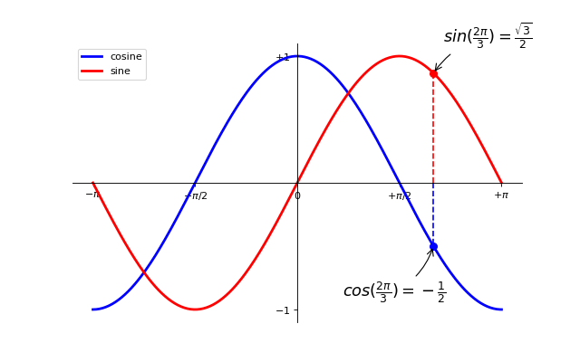

Note
Go to the end to download the full example code
Exercise 9¶
Exercise 9 with matplotlib.
import numpy as np
import matplotlib.pyplot as plt
plt.figure(figsize=(8, 5), dpi=80)
plt.subplot(111)
X = np.linspace(-np.pi, np.pi, 256, endpoint=True)
C = np.cos(X)
S = np.sin(X)
plt.plot(X, C, color="blue", linewidth=2.5, linestyle="-", label="cosine")
plt.plot(X, S, color="red", linewidth=2.5, linestyle="-", label="sine")
ax = plt.gca()
ax.spines["right"].set_color("none")
ax.spines["top"].set_color("none")
ax.xaxis.set_ticks_position("bottom")
ax.spines["bottom"].set_position(("data", 0))
ax.yaxis.set_ticks_position("left")
ax.spines["left"].set_position(("data", 0))
plt.xlim(X.min() * 1.1, X.max() * 1.1)
plt.xticks(
[-np.pi, -np.pi / 2, 0, np.pi / 2, np.pi],
[r"$-\pi$", r"$-\pi/2$", r"$0$", r"$+\pi/2$", r"$+\pi$"],
)
plt.ylim(C.min() * 1.1, C.max() * 1.1)
plt.yticks([-1, +1], [r"$-1$", r"$+1$"])
t = 2 * np.pi / 3
plt.plot([t, t], [0, np.cos(t)], color="blue", linewidth=1.5, linestyle="--")
plt.scatter(
[
t,
],
[
np.cos(t),
],
50,
color="blue",
)
plt.annotate(
r"$sin(\frac{2\pi}{3})=\frac{\sqrt{3}}{2}$",
xy=(t, np.sin(t)),
xycoords="data",
xytext=(+10, +30),
textcoords="offset points",
fontsize=16,
arrowprops={"arrowstyle": "->", "connectionstyle": "arc3,rad=.2"},
)
plt.plot([t, t], [0, np.sin(t)], color="red", linewidth=1.5, linestyle="--")
plt.scatter(
[
t,
],
[
np.sin(t),
],
50,
color="red",
)
plt.annotate(
r"$cos(\frac{2\pi}{3})=-\frac{1}{2}$",
xy=(t, np.cos(t)),
xycoords="data",
xytext=(-90, -50),
textcoords="offset points",
fontsize=16,
arrowprops={"arrowstyle": "->", "connectionstyle": "arc3,rad=.2"},
)
plt.legend(loc="upper left")
plt.show()
Total running time of the script: (0 minutes 0.091 seconds)